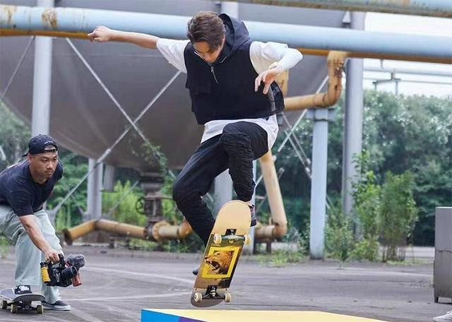
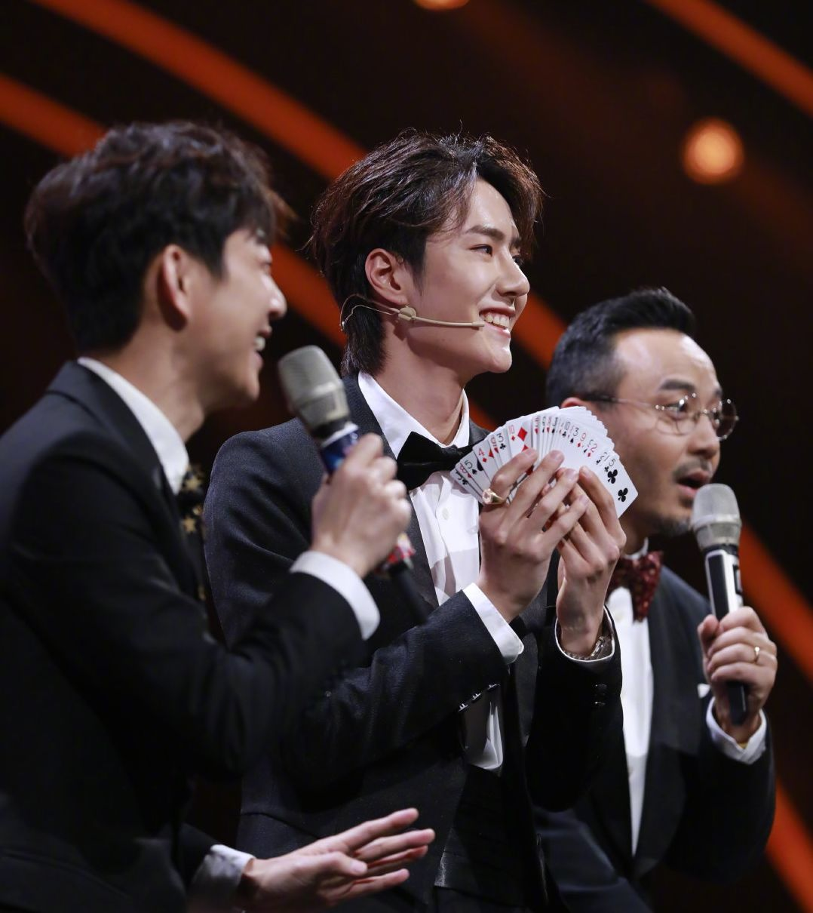

王一博，藝名一博，出生於河南洛陽，中國大陸男歌手、舞者、演員，
湖南衛視《天天向上》節目主持人，同時也是摩托車車手與滑板手。
2014年10月16日，以五人男子團體UNIQ出道， 為團內主領舞、領Rapper，亦是團體中的忙內。
2016年4月29日，正式成為湖南衛視綜藝節目《天天向上》主持團天天兄弟的成員之一。
同時，王一博也是一名職業摩托車車手，為中國萬裡達雅馬哈車隊（MLT YAMAHA）的簽約車手，號碼85，
粉絲團名稱為摩托姐姐。


